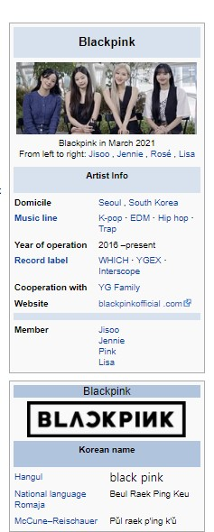
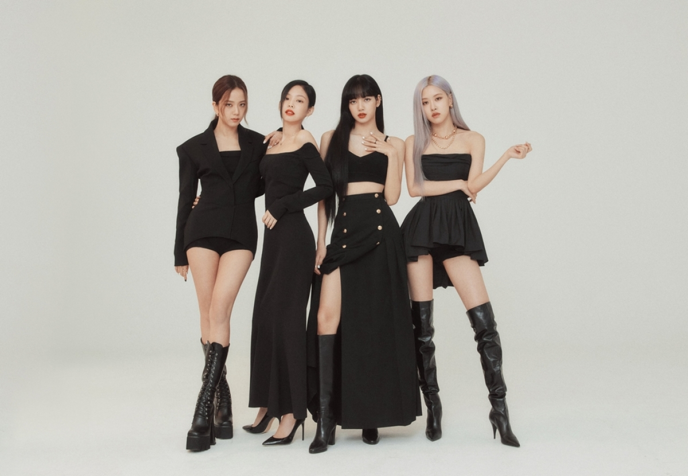
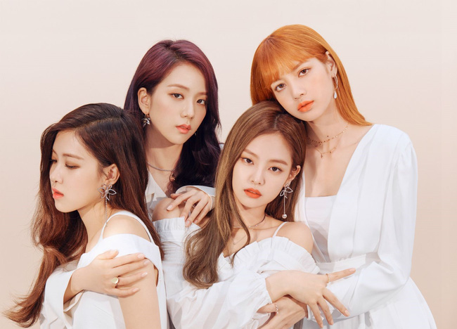
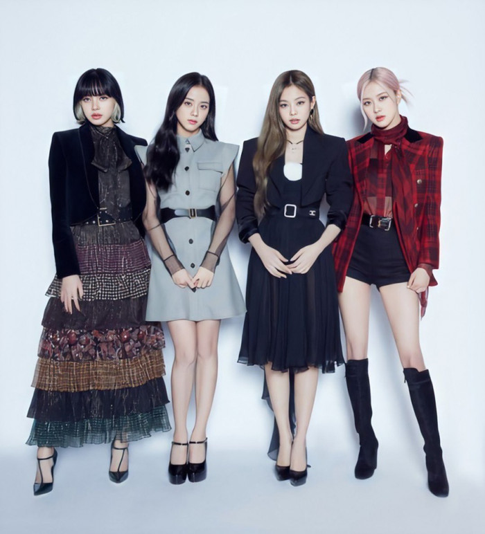
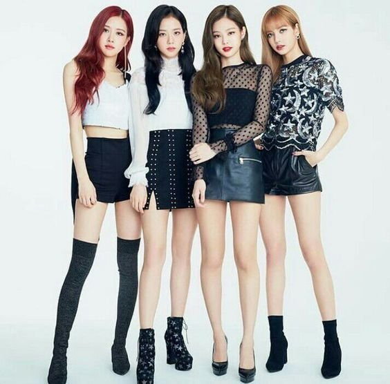
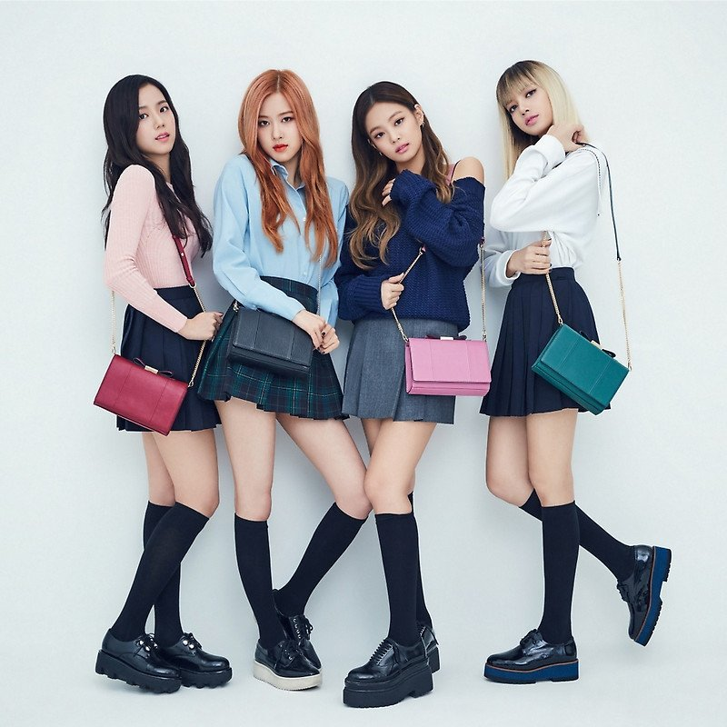

Blackpink ( Hangul : 블랙핑크 ; often stylized as BLACKPINK or BLΛƆKPIИK ) [1] is a South Korean girl group founded and managed by YG Entertainment . The group consists of 4 members Jisoo , Jennie , Rosé , Lisa . Blackpink officially debuted
with their first single album titled Square One, including two songs " Boombayah " and " Whistle ". The two later entered the World Digital Songs chart ofBillboard andKorea's Gaon digital music chart .
Blackpink is the highest-charting Korean girl group on the Billboard Hot 100, reaching number 13 with " Ice Cream " (2020) and on the Billboard 200 with The Album (2020) at number two. [4] [5] Blackpink is the first K-pop girl group to
enter and top Billboard 's Emerging Artists chart and own three number-one singles on Billboard's World Digital Song Sales chart . [6] They are also the first Korean girl group to receive certification from the Recording Industry Association
of America (RIAA) for their single " Ddu-Du Ddu-Du"." (2018) – the music video with the most views on YouTube by a Korean group. [7] Blackpink is also the group that owns the most number of top 40 songs in the UK . The song " Kiss
" and Make Up " is the first song by a Korean girl group to receive certification from the British Phonographic Industry [8] and certified platinum by the Australian Recording Industry Association (ARIA).
The group broke many online records during its time in operation. The music videos " Kill This Love " (2019) and " How You Like That " (2020) both set records for the most viewed music videos within the first 24 hours of their release
on video streaming platforms. online YouTube , in which "How You Like That" broke three and set two Guinness World Records . [10] The group also became the first K-pop group to have four music videos (" Ddu-Du Ddu-Du ", " Kill This
Love " " Boombayah ", " As If It's Your Last " ) reached 1 billion views on this platform. [11]Blackpink is currently the most followed girl group on Spotify and the most subscribed Asian group, female artist and artist on YouTube.
Blackpink's other awards include winning the "New Artist of the Year" category at the 31st Golden Disc Awards and the 26th Seoul Music Awards . They were recognized by Forbes Korea as one of the best. Korea's most powerful celebrity ,
ranked first in 2019, third in 2020, second in 2021 [14] and the first Korean girl group to enter the list of 30 best faces under 30 years old by Forbes . Blackpink is also the first K-pop girl group to win an award at the MTV Video
Music Awards .
History
1. 2010–2016: Before debut

Blackpink was planned to form when YG Entertainment held auditions for teenage and teenage rookies around the world to form a new girl group after the first girl group, 2NE1 , which debuted in 2009. [17] [18] According to the members,
joining YG as a trainee is similar to enrolling in an all-day pop star academy. Jennie considers it "stricter than school" while Rosé compares life at YG like The X Factor to a dorm room. [19]For the members who had to leave their
lives abroad to come to Korea, they faced countless hardships as they had to adapt to the pace of practice and culture shocks. [20] Preparations for Blackpink's debut began in 2011 when YG Entertainment revealed on November 14,
2011 that the company's new girl group would debut in the first half of 2012 with five to seven members. pellets. [21] [22] Since then, there has been a lot of news and rumors going around about the new girl group but their debut
was delayed without any official announcement. [23] [24] It wasn't until May 18, 2016, that YG Entertainment officially confirmed that they were preparing to debut a new girl group in July. [25]A YG representative stated that the
members were selected through years of intense competition and that their skills were recognized after undergoing a long period of practice. [26] YG also later confirmed that the people previously introduced to the public as potential
members of the new girl group were Jang Hanna ( Kpop Star season 3 contestant) and Moon Sua ( Kpop Star season 3) contestant. Unpretty Rapstar season 2) was not included in the debut lineup.
The first member of the group was revealed to be Jennie on June 1 . [29] She joined YG Entertainment as a trainee in 2010 after returning to Korea from New Zealand . [30] In 2012, she was first introduced to the public through a photo
series called "Who's that girl?" was posted on the official YG Entertainment blog on April 10. [31] [32] Jennie is constantly promoting as a member of a new girl group through collaborations with other artists with the same artist.
the company. She played the lead role in the music video "That XX" in 2012 from the EP One of a Kind of G-Dragonand individual voices in the song "Black" album Coup d'etat of G-Dragon and in the "Special" from the album First Love
by Lee Hi in 2013.
On June 8 , photos of the second member, Lisa, were revealed. [36] Lisa is the mysterious girl who impressed many fans in the video "Who's that girl?" which YG posted on Youtube in 2012 . [37] [36] She passed the company's first audition
in 2010 in Thailand . As the winner, she was the only one of more than 4000 contestants to officially become a trainee of YG Entertainment in April 2011, becoming the first foreign trainee to join the company. [30] [38]Lisa used
to be a member of the dance group "We Zaa Cool" in Thailand with Got7 's Bambam and many other friends. [39] She also appeared in Taeyang 's "Ringa Linga" music video in 2013. Later, Lisa became a model for street fashion brand
Nona9on in 2015 and cosmetics brand Moonshot in 2016.
On June 15, YG revealed that the third member is Jisoo . She joined YG Entertainment as a trainee in July 2011. Jisoo in the years before her debut appeared in several commercials and music videos, including "Spoiler + Happy Ending"
(2014) ) from Epik High 's Shoebox and Hi Suhyun's "I'm Different" (2014). [41] [42] In addition, Jisoo once appeared in the movie Behind the Scenes of Entertainment as a guest actor. [43] Rosé was the last revealed member on June
22. She ranked first among 700 applicants for YG Entertainment's 2012 audition in Australia. , then signed a contract with the company and moved to Seoul in April of that year and began his trainee period. [30] Rosé featured in
the song "Without You" from G-Dragon's EP One of a Kind in 2012. [37] However, she is only mentioned under "? from YG's new girl group" . Rosé's true identity remained hidden for almost 4 years until she was officially introduced
to the public for the first time. Only then did YG reveal that she had participated in the above song.
Day 6 month 7 year 2016 , YG launched video dance practice first on the music Blackpink the remix song " Bitch Better Have My Money " by Rihanna . [44] [52] The clip has garnered millions
of views along with hundreds of thousands of likes. [53] The video of the group's choreography really shows the dancing skills of the four YG girls. In addition to Lisa, who is the main dancer, the other members with the singing
and rapping positions also received many compliments for their dancing ability .[54] On July 29, YG Entertainment confirmed that Blackpink would debut on August 8, 2016.
2. 2018–2019: International success and first world tour
Promotions for the group's debut began in the first week of August 2016 after a series of images, teaser videos and advertisements were published. [57] [58] As the first girl group to debut under YG Entertainment in seven years, Blackpink
released their first single album Square One on August 8, 2016 with two songs " Boombayah " and "" Whistle ". [59] These two songs quickly climbed to number one and two on the Billboard chart as soon as they were released.World
Digital Song Sales. Blackpink thereby becomes the artist to achieve this achievement in the fastest time and is the third Korean artist to hold the top two positions at the same time, after fellow artists Psy and Big Bang . [60]
Domestically, the song "Whistle" topped Gaon 's digital, download, streaming, and mobile charts [61] [62] and helped Blackpink become the K-group was the first pop song to debut with a "perfect all-kill" debut. [a] [64] At the
iTunes chart , the album Square OneRight after its debut, it won #1 on Worldwide iTunes Album Chart. As a result, Blackpink became the first K-pop idol group to reach No. 1 on this chart in the shortest time. [65] On the YouTube
video sharing platform , Blackpink became the K–pop group with the most views for a music video debut within 24 hours with over 3.3 million views of "Boombayah". In the Chinese market , the group also reached number one on the
weekly charts, popularity, music videos and K-pop music videos of QQ Music , the country's largest music streaming service. . [66] Blackpink has their first music show performance on Inkigayoon SBS, which aired on August 14, 2016.
[67] On August 21, the group won with "Whistle" on Inkigayo just 13 days after their debut, breaking the record for being a girl group. was nominated and won on the fastest music shows since debut and started promoting. [68] Blackpink
ended their Square One promotions on September 11, 2016 with another victory on Inkigayo . [69] Thanks to their short-term success, Blackpink was dubbed the "dinosaur" rookie by the press.
Blackpink released their second single album Square Two with two songs " Playing with Fire " and " Stay " on November 1, 2016. The group started promoting on Inkigayo on November 6 and on Mnet 's M Countdown on November 10, [72] "Playing
with Fire" was the group's second single to reach number one on the Billboard World Digital Song Sales chart and the first song by a K-pop girl group to enter. charts Canadian Hot 100 . [73] [74] In the Korean market, "Playing
with Fire" peaked at number three while "Stay" came in at number ten.[75] Blackpink's commercial success in the first day brought the group the "Rookie of the Year" award at major Korean year-end music award shows including Asia
Artist Awards , [76] Melon Music Awards , [77] Golden Disc Awards , [78] Seoul Music Awards [79] and Gaon Chart Music Awards . [80] [81] In addition, Billboard named Blackpink as one of the best new K-pop groups of 2016.
 January 15, 2017, Blackpink revealed "Blink" (블링크), a combination of "black" ( black ) and "pink" ( pink ) [83] will be the name of fandom official group with a picture posted upload to Instagram
. [84] YG explained that they took "Bl" from Black and "ink" from "pink" to form the word "Blink", which means the way the group sees their fans. [85] On the morning of May 17, YGEX Entertainment [b] announced that Blackpink would
debut in the Japanese market in July. [87]To promote the group, since May 17, YGEX has uploaded the profiles of 4 members Jisoo, Jennie, Rosé and Lisa on the official website. Besides, the image of the group were also introduced
in the press and television broadcasting in Japan and will hold a showcase debut on July 20 at the stadium Nippon Budokan and released the EP on 9 March 8.
On June 22, the group released their first independent digital single, " As If It's Your Last ". [89] [90] The song debuted at number one on Billboard's World Digital Song Sales chart the day after its release, becoming the group's
third number one hit on the chart. [91] "As If It's Your Last" then broke the record for the most liked music video by a Korean girl group on YouTube as well as becoming the most liked K-pop group music video in the world. the
most views within 24 hours at that time. [92] On July 20, 2017, Blackpink held a showcase at Nippon Budokan Stadium in Tokyowith the participation of more than 14,000 people and with about 200,000 people trying to buy tickets.
[93] [94] The group officially debuted in Japan on August 30, 2017 after releasing the Japanese LP titled Blackpink which included Japanese versions of the group's previous singles. [95] [96] This mini-album peaked at the top of
Japan's Oricon Albums Chart. [97] in November, the song "As If It's Your Last" has appeared in a scene of the movie superhero Alliance for Justice of the company Warner Bros . [98] [99] At SBS Gayo Daejeon stageLater that year,
Blackpink performed "As If It's Your Last" and a cover of Wonder Girls ' song "So Hot" remixed by The Black Label . [100] At the 2018 Golden Disc Awards stage , Blackpink performed two songs "Playing With Fire" and "As If It's
Your Last" and received the "Digital Bonsang" award along with Heize. [101] In addition, Blackpink's only comeback song in 2017 entered YouTube's 25 summer songs chart that year.
3. 2020–present: The Album and The Show
On April 22, it was confirmed that the group would be collaborating with Lady Gaga on her sixth studio album, Chromatica , for a track titled " Sour Candy ", which will be released as a promotional single on May 28, 2020. [154] On
the Billboard Hot 100, the song debuted at number 33, yielding Gaga's 25th top 40 hit and Blackpink's first hit, becoming a song. The group's highest-charting song in the United States at the time, as well as the highest-charting
song by a K-pop girl group. In Australia, the song debuted at number 8, becoming Blackpink's highest charting hit in the country. [155]It was also their first single to reach the top 20 in the UK, debuting at number 17



On May 18, YG Entertainment announced that the group would pre-release a single in June, followed by an additional single from July to August, to promote their first Korean studio album. their. [157] [158] On June 2, YG Entertainment
confirmed that after the release of this studio album, members Rosé, Lisa, and Jisoo will be working on individual projects, of which Rosé will be the first. first. [159] In the process of preparing for the group's comeback, YG
Entertainment released the opening sequence of Blackpink's new reality show, 24/365 with Blackpink., on June 13, before its official debut on YouTube. The show chronicles their 2020 comeback along with sharing their daily lives
through vlogs . [160] The single " How You Like That " was heavily teased on social media before being released digitally on June 26. [161] [162] It debuted at No. 12th on the Gaon Digital Chart in just one day and 16 hours of
tracking and peaked at number one on the Gaon Digital, Download and Streaming charts for the second week. [163] "How You Like That" becomes Blackpink's fifth song to enter the Billboard chartsHot 100 (which peaked at number 33)
and its music video broke five Guinness World Records . [164] The song topped YouTube Music 's Global Top 10 Summer 2020 Songs [165] and won Song of the Summer at the 2020 MTV Video Music Awards , making Blackpink the first Korean
female artist won at the award ceremony. [166] On July 23, YG Entertainment announced that the second single, " Ice Cream ", featuring American singer Selena Gomez , would be released on August 28. [167] [168] "Ice Cream" debuted
and peaked at number 13 on BillboardHot 100, becoming Blackpink's highest-charting song on the chart.
Blackpink released their first Korean studio album, The Album , on October 2, 2020, with " Lovesick Girls " as the third and lead single. [170] Ahead of the exclusive premiere of the music video for "Lovesick Girls", Blackpink appeared
on Youtube's new music show Released as the first featured artist, which included "visiting" moments. unfiltered" of the group. [171] The Album peaked at number two on the Billboard 200 and UK Albums Chart , making Blackpink the
highest-charting Korean female artist on each chart. [172] [173]The album also set a first-week sales record for a Korean girl group, with 590,000 physical copies sold in just one day of release. [174] Blackpink became the first
K-pop girl group to sell millions of copies with The Album , selling around 1.2 million copies in less than a month after its release. [175] Blackpink performed "Lovesick Girls" on Good Morning America and Jimmy Kimmel Live! in
the United States on October 21. [176] The group's first documentary, Blackpink: Light up the Sky , premiered on Netflixon October 14, 2020 recounts the four years of the group's activities since their debut in 2016. The documentary
includes footage from their practice days, a look back at their family life, and stories. Behind-the-scenes and interviews with the members, as well as an overview of The Album's production . [177] The success of The Album , combined
with the group's Netflix documentary, resulted in Blackpink topping Bloomberg 's Pop Star Power Ranking for October; Blackpink is the first Korean artist to top this chart since its formation in April of that year.
On December 2, Blackpink announced their collaboration with YouTube Music for their first online concert. The online event, named " The Show ", was originally scheduled to take place on December 27, 2020, but due to the new COVID-19
pandemic regulations in place in South Korea, it has been rescheduled. to January 31, 2021. [180] The concert featured the first live performance of several songs from The Album , as well as Rosé's song " Gone " from her first
solo album, -R- . [181] It was later revealed that over 280,000 people had purchased a membership to gain access to the show.
On June 2, 2021, Universal Music Japan announced that the group would release a Japanese version of The Album on August 3, 2021. It includes Japanese versions of four of the eight songs – " How You Like That", "Pretty Savage", "Lovesick
Girls", "You Never Know" – and 12 different physical versions.
On June 15, 2021, YG Entertainment announced the start of a new project, named "4 + 1", on the 5th anniversary of the group's debut.